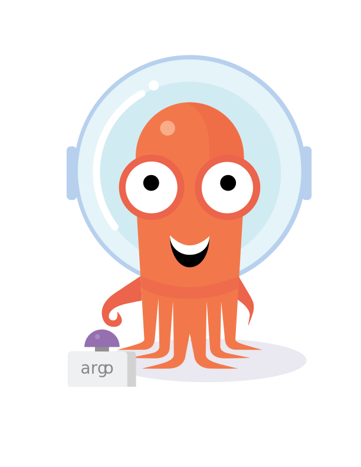

<% if (webpackConfig.htmlElements.headTags) { %> <%= webpackConfig.htmlElements.headTags %> <% } %>
The workflow engine for Kubernetes
Get stuff done with Kubernetes using container-native workflows

<% if (htmlWebpackPlugin.options.metadata.isDevServer && htmlWebpackPlugin.options.metadata.HMR !== true) { %> <% } %>